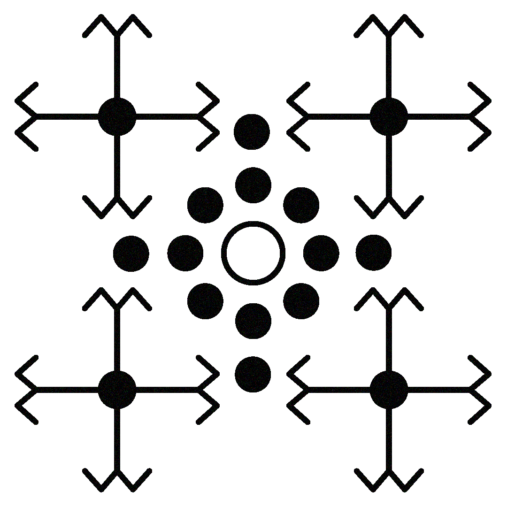

ABOUT ME
I am a visual, UX/UI designer and researcher, studying Communication and
Multimedia Design at the Amsterdam University of Applied Sciences (HvA).
With an empathetic approach and a research-driven mindset, I focus on
shaping impactful brands and intuitive digital experiences. My aim is
to bridge creativity and functionality, turning ideas into designs that
connect with you.

MY WORK
Here you’ll discover my work across Visual Design, UX, UI, Research, and Front-End. I explore different disciplines and creative directions, showing how thoughtful design and experimentation can shape engaging and meaningful digital experiences.
Go to my works
CONTACT
Interested in learning more about my work or exploring a collaboration? Feel free to reach out—I’d be happy to connect and share more with you.
Contact me 